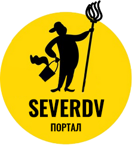

Портал о домашних заботах
На нашем сайте каждая хозяйка может узнать много секретов, упрощающих поддерживание порядка в доме. Простые советы уберегут вас от неприятностей, с которыми вы можете столкнуться в процессе стирки, уборки, хранения продуктов и так далее.
Популярные советы домохозяйкам
Своими руками